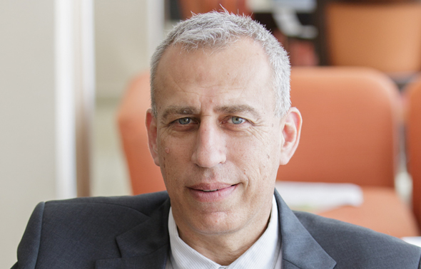

The former chief medical officer will raplace the current commissioner Ronni Gamzu.
Health Care System person said: "professionally, He will be great, the question is if he will be able to deal with
all the pressure, politics and dirt".
Written by David Umansky, OCTOBER 27, 2020 16:00
The article translated from YNET Israel for the porpuse of creating a project- news website's article. Link to the article here .

Prof. Nachman Ash (photo credit: Dafna Gazit)
Prof. Nachman Ash, former chief medical officer in IDF and current head of the health division in "Maccabi Health Services",
will replace prof. Ronni Gamzu and will be the new coronavirus commissioner(responsible for the national struggling with the virus). The announcement
was made this morning(Tuesday) by the prime minister Benjamin Netanyahu and health minister Yuli Edelshtein. He will begin his adaption period tomorrow
with Gamzu(in the role until November 13) that will show him the principles of the role- also called "Magen Israel". Leaving commissioner will gradually
return to his previus role- Ichilov hospitel director.
The outgoing commissioner said: "this peroid is very challenging in light of the need of safety back to normal, controling the infection rate and focusing dozens of complex processes and hundreds of cities.
Im happy about the election of Prof. Ash, I will continue to assist, advise after the adaption period and will be available for any request of his, health minister, Israeli goverment".
Health ministry CEO prof. Chezy Levy, that was his assistant in the army, said: " Im very happy about the appointment. Prof. Ash is one of the superior's
professionalls that there is, dealt a lot with medical quality and medical manegment. In the last year he also delt alot with the Corona virus subject. He attended in alot of commitees on behalf of the health ministry.
He is a great executor, experienced, i would love to work with him".
Anonymous Health Care System person said : "Nachman is very proper and intellegent, 'filled' alot of roles and one of the most deligent people that I know.
A real professional, will work excellent with Chezy. The question is- will he be able to deal with all the pressure and the politics? Ronni did it well he is A politician, Nachman is not".
"One more thing is the question how he will get along with the media", added the Health Care System person. " He is more like introverted personality. The media 'killed' Chezy Levy quickly because he was too kind. it's hard to find personalitys like Zeev Rothstein,
Gabi Barbash, Roni Gamzo or Prof. Itzik Kreis. Sometimes it's necessary to 'stend on your back legs', knock on the table and not give up. If you want to choose
excellent man- this is the right person but if you need a person that can handle all the dirt- its a problem".
Nachman Ash at IDF (photo credit: IDF spokesman)
Ash's stance regarding the Corona virus manegment can be found on his Tweeter account, where he wrote critiques. He criticized at September the National Information Center's daily publication of 'meeting the targets' that had been set by the PM. while number of severe patients increased and
suggested that the national responsibles in struggling with the virus are arrogant. Towards the nomination Ash spoke with the PM. Benjamin Netanyahu.
Before of the decision to nominate Ash some other options was considered like to nominate previus commissioners Gabi Barbash or Moshe Bar Siman-Tov.
The option of revoking the role and transfering the autority to Health ministry CEO also considered.
Prof. Yehuda Adler, Dean of the Faculty of Health Sciences at the Ramat Gan Academic Center criticized: "There's no need in coronavirus commissioner role since the Israeli goverment
'voiding it' of any content and not alowing a professional decision-making".
For top stories and the most updated news to your email, please subscribe. ⇨